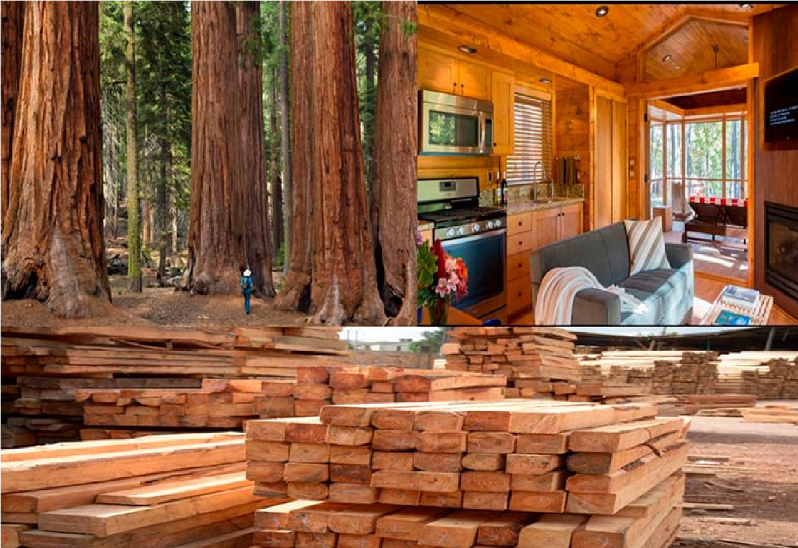
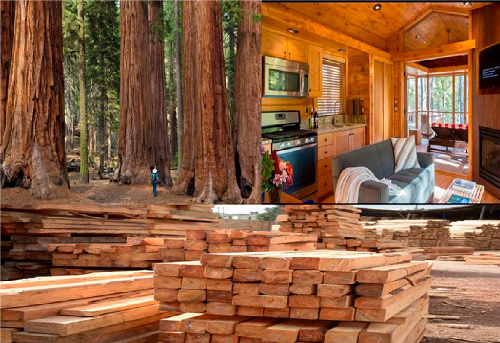

La Madera
Los componentes químicos de la madera poseen propiedades que son muy importantes para la fabricación de cualquier producto. La madera está compuesta por agua, lignina, agua, resina, sales minerales y celulosa en una proporción que vería según el tipo de según el tipo de madera del que estemos hablando.
Entre las características de la madera, por ejemplo, la celulosa sirve para fabricar papel; los taninos, gomas, resinas y aceites son destinados a la producción de pinturas, barnices y adhesivos; la lignina (que es la sustancia que une las fibras de la madera) se aprovecha en la industria del plástico y en el cultivo de levadura de cerveza, que sirve como alimento al ganado y las aves de corral.
Estas son las propiedades de la madera que se tienen encuentra a la hora de clasificar los diferentes tipos de madera:
• Dureza: resistencia a la penetración por otros cuerpos.
• Flexibilidad: capacidad que tiene la madera de doblarse sin que se rompa el sentido de sus fibras.
• Higroscopicidad: capacidad de absorber o desprender humedad.
• Facilidad de pulido: propiedad relacionada con la dureza de la madera ya que mientras más dura es la madera más facilidad es su pulido.
• Color y Avetado: propiedad que se tiene en cuenta a la hora de decidir el acabado estético de la obra que se quiere realizar.
• Resistencia mecánica: características de la madera para soportar esfuerzos de compresión, flexión, tracción, torsión, y cizalladura.
 
